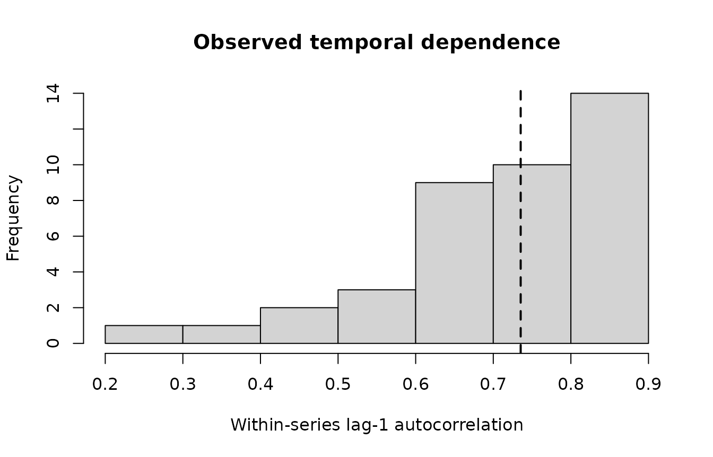

Bounded ARMA and Temporal Diagnostics
Source:vignettes/arma-and-temporal-diagnostics.Rmd
arma-and-temporal-diagnostics.Rmd
library(gp3bayes)
sim <- simulate_advanced_pupil_timecourse(
n_participants = 10,
trials_per_participant = 4,
time_points = 35,
ar = c(0.55, -0.12),
ma = 0.10,
seed = 3010
)Audit first; do not select an order from a plot
audit <- audit_pupil_temporal_dependence(sim$data, max_lag = 8)
pupil_autocorrelation_table(audit, "summary")
#> metric value
#> 1 series 40.0000000
#> 2 median_length 34.0000000
#> 3 median_lag1 0.7353051
#> 4 median_abs_lag1 0.7353051
#> 5 median_irregularity 0.0000000
#> 6 short_series_fraction 0.0000000
plot_pupil_temporal_dependence(audit)
The observed ACF can reflect residual dependence, misspecified mean trajectories, design structure, preprocessing, or combinations of these. gp3bayes therefore treats the audit as descriptive evidence rather than an order-selection algorithm.
Governed ARMA orders
create_pupil_arma_spec(1, 0)
#> $p
#> [1] 1
#>
#> $q
#> [1] 0
#>
#> $covariance
#> [1] FALSE
#>
#> attr(,"class")
#> [1] "gp3bayes_pupil_arma_spec"
create_pupil_arma_spec(2, 0)
#> $p
#> [1] 2
#>
#> $q
#> [1] 0
#>
#> $covariance
#> [1] FALSE
#>
#> attr(,"class")
#> [1] "gp3bayes_pupil_arma_spec"
create_pupil_arma_spec(1, 1)
#> $p
#> [1] 1
#>
#> $q
#> [1] 1
#>
#> $covariance
#> [1] FALSE
#>
#> attr(,"class")
#> [1] "gp3bayes_pupil_arma_spec"Orders are bounded to AR(3)/MA(2). The common shortcuts are available directly in the model specification.
spec_ar1 <- specify_advanced_pupil_timecourse_model(sim$data, family = "gaussian", autocorrelation = "ar1")
spec_ar2 <- specify_advanced_pupil_timecourse_model(sim$data, family = "gaussian", autocorrelation = "ar2")
spec_arma11 <- specify_advanced_pupil_timecourse_model(sim$data, family = "gaussian", autocorrelation = "arma11")Post-fit residual comparison
fit_ar1 <- fit_advanced_pupil_model_backend(spec_ar1, backend = "cmdstanr")
fit_ar2 <- fit_advanced_pupil_model_backend(spec_ar2, backend = "cmdstanr")
fit_arma11 <- fit_advanced_pupil_model_backend(spec_arma11, backend = "cmdstanr")
acf_cmp <- compare_pupil_autocorrelation(
ar1 = fit_ar1,
ar2 = fit_ar2,
arma11 = fit_arma11
)
plot_pupil_autocorrelation_comparison(acf_cmp)
spectrum <- pupil_residual_spectrum(fit_arma11)
plot_pupil_residual_spectrum(spectrum)Residual spectra are deliberately descriptive. Peaks are not interpreted as cognitive or physiological rhythms by gp3bayes.